Circles, onboarding and Explore: UX walkthrough
27 Oct 2026 · the real app (branch claude/onboarding-ventanita, local backend) and the latest Circles and Explore prototypes · Spanish · 390×844 and 320×568
app.json sets extra.apiUrl to production, and resolveApiUrl prefers that over localhost. During this walk the sandbox refused those calls and every later call was rerouted to the local backend, so no account or post reached production. A developer running the app locally would be writing to production. Also, the local database was 10 migrations behind (guest sign-in failed until they were applied).The nine to fix before testers
- C1 Circles
Real app: private messages, profiles and Conectar have no way in. Circles is free in the new tab, but the old message and circle screens still show Premium gates, and the paywall says «la membresía abre … y el Círculo».
Fix Add a Mensajes entry and tappable author names to the topics screen, or tell testers DMs aren't in this build. Redirect the old gated routes. Fix the paywall and free-plan copy (C11).
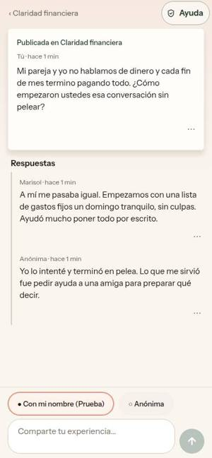
- E1 Explore
«Incluido con Elara» looks like "included free", but tapping it opens «Esta es para miembros… Desbloquear». The filter sheet says everything is «Gratis o Incluido con Elara».
Fix Rename to «Con membresía» with a lock icon. Remove or correct the filter-sheet sentence.
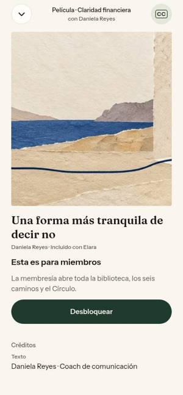
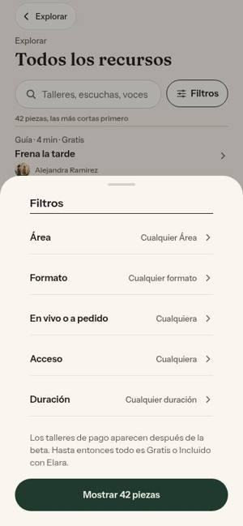
- E2 Explore
Workshop content is in English: «Braver conversations», the «¿Es para ti?» checklist and the agenda. Author «The Elara Guide». (In the local database all 21 workshops lack Spanish; beta may differ, unverified.)
Fix Fill in the Spanish translations, or hide a workshop in Spanish until it has them. Author «Guía de Elara».
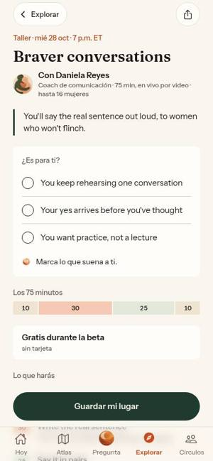
- O1 Onboarding
«Empezar el día 1» silently creates a guest account. All she sees is «Al continuar aceptas nuestros Términos de uso».
Fix Above the button: «Al empezar, Elara crea una cuenta de invitada en este teléfono. Puedes añadir tu correo al terminar el Día 1.» Version 3 already has this copy.
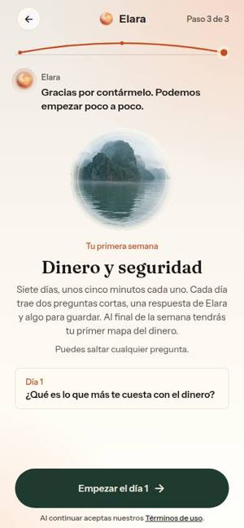
- O3 Onboarding
Day 1 isn't what onboarding promised. The start card shows «¿Qué es lo que más te cuesta con el dinero?» (or «Lo que te está pesando», even after «Voy bien»). Day 1 actually opens with an intro, «Respira conmigo», then «¿hay algo que no puede esperar?».
Fix Show the real first step, or a neutral «Día 1 · Una primera mirada a tu dinero». Same for all three onboarding versions.
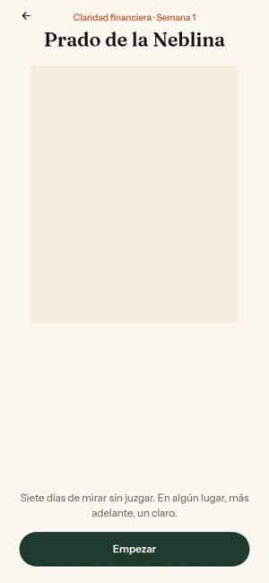
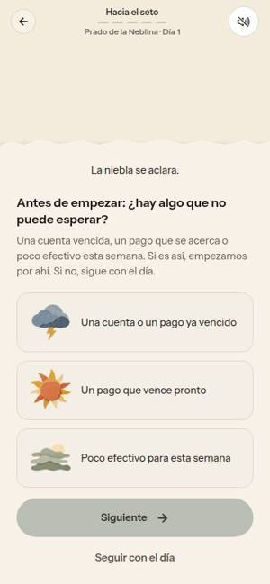
- O2 Onboarding
In invite mode the button still says «Empezar el día 1», then lands on an invite-code form.
Fix In invite mode: «Crear cuenta con tu código» plus «Durante la beta se necesita un código de invitación.»
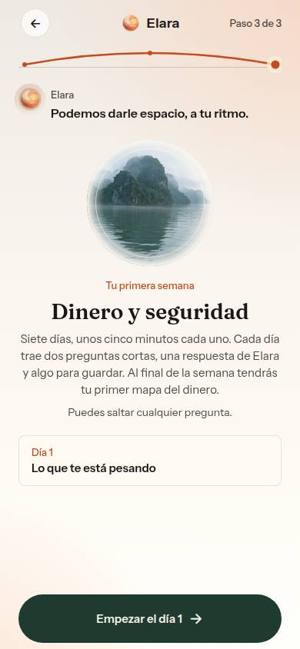
- E4 Explore
Searching her real words («deudas», «pareja», «ansiedad») finds nothing and shows the same unrelated guides. Only title words work.
Fix Search summaries, areas and need tags, and add synonyms. With no match, suggest the matching need chip («Ordenar el dinero»).
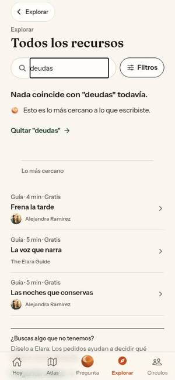
- E3 Explore
Guides say «6 min» but are two sentences long. «Empezar la guía» does nothing visible.
Fix Work the time out from length. Hide the button, or make it «Listo», when everything fits on one screen.
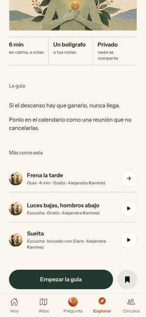
- C4 Circles
On the first visit, «Descubrir primero» lands on the empty Mis círculos, not Descubrir.
Fix Land on Descubrir. Label: «Ahora no, ver todos los círculos».
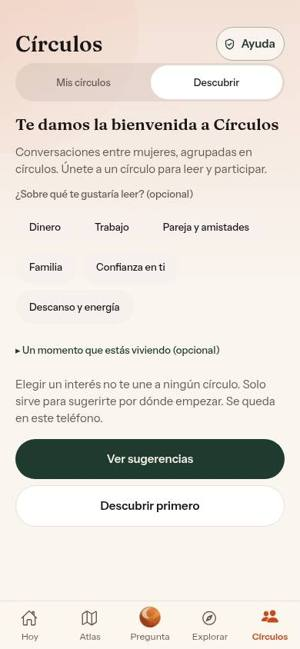
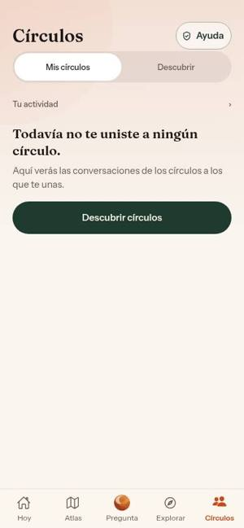
Circles: everything else
| ID | Sev. | Where | Problem | Fix |
|---|---|---|---|---|
| C2 | High | Prototype | Replies always post as «Sofía», with no named or anonymous choice. Building from the prototype would expose her name. 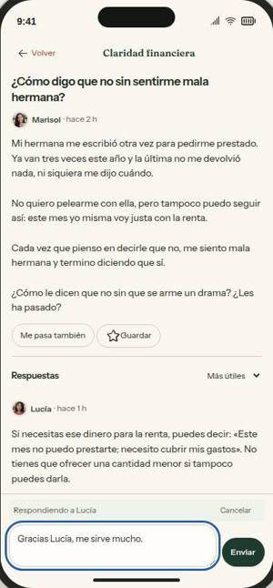 | Keep the real app's «Con mi nombre / Anónima» choice on every reply. |
| C3 | High | Prototype | No Reportar on posts, replies, profiles or DMs, and no crisis/help route. | Spec must keep the real app's ⋯ → Reportar/Bloquear and «Ayuda». Add Reportar to profiles and DMs. |
| C5 | Medium | Real · Descubrir | Circle name is smaller and lighter than its description, so the hierarchy reads upside down. 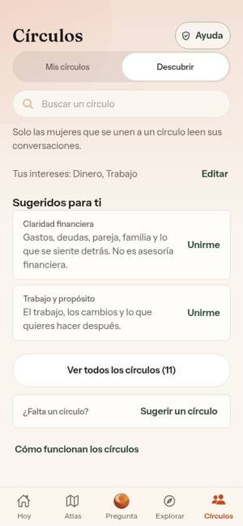 | Name 15px semibold, description 14px muted. |
| C6 | Medium | Real · own post | «Tú · hace 1 min» doesn't say whether others see her name. Default is «Con mi nombre». | «Tú (con tu nombre)» / «Tú (como Anónima)». Remember her last choice. |
| C7 | Medium | Real · thread | Replies are flat, so she can't answer one particular woman (the prototype can). | Build the prototype's «Respondiendo a…» with «Cancelar». |
| C8 | Medium | Real · thread 320 | Identity chips wrap and take about 180px. Her text is clipped, and the keyboard will hide the thread. 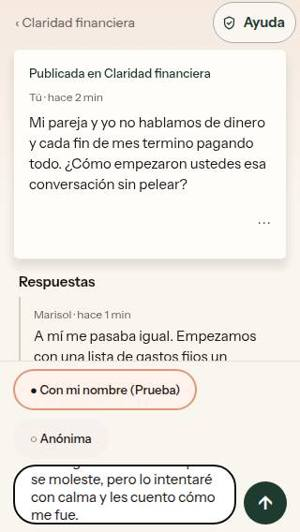 | One compact row, or «Cómo apareces: Prueba ▾». Cap the field at 4 lines. |
| C9 | Medium | Real · circle | «Cómo funciona este espacio» disappears after joining. | Keep it under the sections or in a ⋯ menu. |
| C10 | Medium | Real · guidelines | «Amabilidad antes que lucidez», the English word «feeds», «reflexión» vs «publicación», «Retira» vs «Quitar», title vs link mismatch. The crisis card has no button. 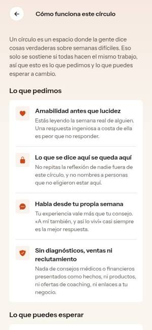 | «Amabilidad antes que ingenio», «Desaparece de todas las conversaciones.», add a «Pedir ayuda ahora» button. |
| C11 | Medium | Real · free-plan explainer | Still says «Los círculos… son las partes que necesitan membresía». | «Tu guía y los encuentros necesitan membresía. Los círculos son gratis.» |
| C12 | Medium | Real · Mis círculos | She can't write from the tab; it takes chip → circle → «Escribir». | Add «Escribir», opening the composer with the destination picker. |
| C13 | Medium | Prototype | What Conectar does is never explained. «Conectar / Contactos / Conexiones» drift. The send button says «Solicitar». | One line under the button. One term throughout. «Enviar solicitud». |
| C14 | Medium | Prototype · Mensajes | A public-thread notice sits in private messages and counts toward the badge. | Move it to Mis círculos → Respuestas nuevas. |
| C15 | Medium | Prototype · 320 | «Me pasa también» wraps away from its icon. Chips are cut off. The add button covers row actions. 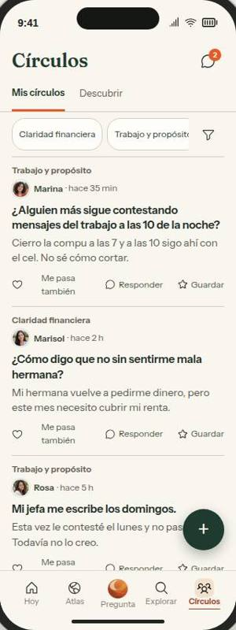 | «A mí también». Bottom padding. Drop the duplicate «Descubrir» chip. |
| C16 | Low | Real | Feed rows still show reply counts (agreed decision 6 removes them). | Remove them. |
| C17 | Low | Real · reply menu | The sheet is titled «Respuestas» for one reply. The screen-reader label says «publicación de Tú». | «Opciones»; «…de tu publicación». |
| C18 | Low | Real · copy | «Gestionar», «Añadir». Mixed «personas/mujeres». Mixed tenses. An orange link among green ones. | «Administrar», «Agregar»; pick one of each. |
| C19 | Low | Real · circle header | The only way to leave is tapping «✓ Te uniste». | «Salir del círculo» in a ⋯ menu. |
| C20 | Low | Prototype | «Normas», «Ajustes» and name links are under 44px. | Make tap targets at least 44px. |
| C21 | Low | Prototype · composer | «Guardar» does the same as back. «Publicar en demo». | Drop «Guardar»; add «Tu borrador se guarda solo.» |
Onboarding: everything else
| ID | Sev. | Where | Problem | Fix |
|---|---|---|---|---|
| O4 | Medium | Real · start | The week is called «Dinero y seguridad»; everywhere else says «Claridad financiera · Semana 1». | Use «Semana 1» and «Claridad financiera». |
| O5 | Medium | Real · start | «Al final de la semana tendrás tu primer mapa del dinero» promises something Day 7 doesn't guarantee. | «…puedes armar tu primer mapa del dinero.» |
| O6 | Medium | Real · 320×568 | Welcome text is cut off behind the button with no scroll cue. The check-in shows about 2.5 of its 5 options. 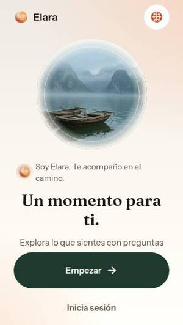 | A smaller landscape window on short screens. |
| O7 | Medium | Real · language switch (web) | Choosing a language throws «findNodeHandle is not supported on web» (existed before this branch). | Guard the call with a web check in LanguageSwitch.tsx:145. |
| O8 | Medium | Real · old screens | Eight old onboarding screens still open by URL, with stale counters such as «Pregunta 1 de 5». | Redirect them to /begin. |
| O9 | Medium | Real · first Today sheet | «Regístrate con una palabra. El número en tu foto…» reads as "sign up", and a new guest has no photo. | «Cuenta cómo llegas con una palabra. El número junto a tu perfil son los días seguidos.» |
| O10 | Low | Real · after skipping | «Puedes empezar sin contarlo todo.» implies she's holding back. | «Está bien. Empezamos sin eso.» |
| O11 | Low | Real | The back arrow is 38px. «¿Olvidaste tu contraseña?» and «Crear una cuenta» are 20px tall. | Make tap targets at least 44px. |
| O12 | Low | Real · check-in | Options don't announce the selected state on web. | Add aria-checked. |
| O13 | Low | Real · create account | «Guarda tu avance.» shows even when there's no progress yet. | «Crea tu cuenta.» |
| O14 | Low | Real · Day 1 | A sun from the check-in art sits next to «Un pago que vence pronto». | Use neutral art. |
| O15 | Low | Both | «saltar / pasar», «Inicia sesión / Ya tengo cuenta». | Pick one of each. |
| V1 | High | Version 3 | The guest-account card still shows in invite-code and signed-in states, where it's wrong. 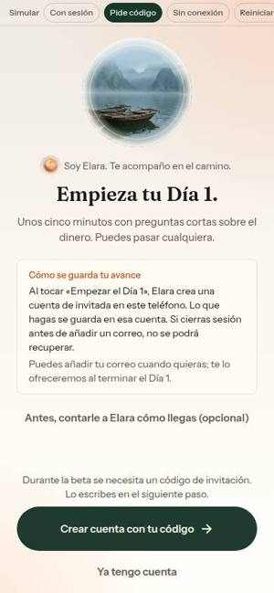 | Show it only on the guest path. |
| V2 | Medium | Version 3 | After the optional check-in, Elara's reply lands below the fold and is cut off behind the button. 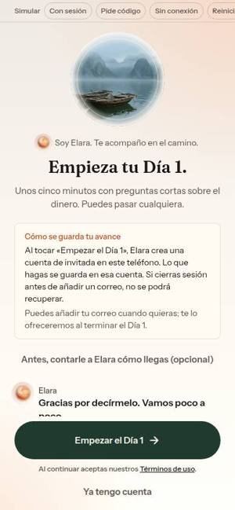 | Put the reply above the guest card. Link: «Cambiar lo que le contaste a Elara». |
| V3 | Medium | Version 3 | Without the check-in, «Semana 1 · Claridad financiera» never appears. | Always show the week line. |
| V4 | Medium | Version 3 · 320 | The guest explanation is cut off and the check-in link is below the fold. | Tighten the layout for short screens. |
| V5 | Low | Version 3 | The optional detour says «Paso 2 de 2» with a full progress bar. | «Opcional». |
| V6 | Low | Version 3 | «Volver sin responder» silently erases her earlier answer. | Keep the answer, or label it «Borrar mi respuesta y volver». |
| V7 | Low | Version 3 | «…y quieres cuidar?» reads awkwardly. | «…y te gustaría cuidar?» |
Explore: everything else
| ID | Sev. | Where | Problem | Fix |
|---|---|---|---|---|
| E5 | High | Real · audio | «No pudimos reproducirlo ahora.» is a dead end and the play button still looks active (local had no media; beta unverified). 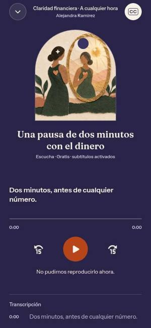 | «Reintentar» and «Leer la transcripción»; disable play. |
| E6 | Medium | Real vs v5 | The home is about 4,400px tall vs 1,514 in the locked v5 design. There are no sticky format tabs, and search sits at the very bottom. Keep the «¿Qué necesitas hoy?» chips, which work well. | Move toward the v5 structure. |
| E7 | Medium | Real · workshops | Times show «7 p.m. ET» to a user in Mexico City. | Her local time plus «(hora de tu zona)». |
| E8 | Medium | Real · «Por qué ves esto» | Refers to a «Para ti» section that doesn't exist. «tus registros de cómo llegas» is unclear. | «Esto ordena «¿Qué necesitas hoy?»», «tus registros de ánimo». |
| E9 | Medium | Real · save | Only the icon changes, with no hint of where it went. «Guardado» is hidden in the profile drawer. | Toast «Guardado. Lo encuentras en Guardado» plus a header bookmark. |
| E10 | Medium | Real · after reserving | «Guarda una línea… Apagado hasta que lo enciendas.» is unclear. «Añadir al calendario». 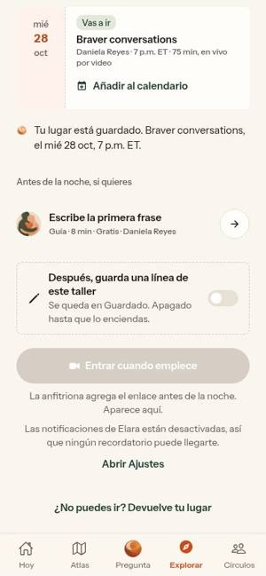 | «Después del taller, te pedimos una frase para guardar» with «Recordármelo»; «Agregar al calendario». |
| E11 | Medium | Real · copy | «su orbe lo marca», «Área» capitalised, «sesiones en vivo» vs «talleres», «Película» for a 30-second clip, «Septiembre». | «Elara te sugiere piezas…», «tema», «talleres», «Video breve», «septiembre». |
| E12 | Medium | Real · offline | Search and filters stay active under the load error. Fonts fell back to Times. | Hide them while offline; bundle the fonts. |
| E13 | Low | Real · 320 | «Con Daniela Re…», «Buscar en Ex…». Day arrows are 24×44. | «Buscar»; 44×44 arrows. |
| E14 | Low | Real | The full list starts with 16 guides. Creators share near-identical art. Doubled periods in screen-reader labels. | Mix formats; give each creator their own art; fix the labels. |
| E15 | Low | Prototype | Sample dates are in the past. The «Guías» tab is cut off at 320. Section names don't match the tabs. No <meta charset>. | Update the sample dates and labels; add charset. |
What was walked and what wasn't
Circles: welcome and interests, Mis círculos (empty and filled), Descubrir, a circle before and after joining, the composer, a thread with replies and the reply menu, activity, manage, suggest, guidelines, Ayuda, plus the old routes opened by URL. In the prototype: every section, profiles, Conectar, a DM request, the inbox and 320 mode. Not verified: DMs in the real app (no way in), real-keyboard behaviour, anonymous posting by script.
Onboarding: welcome → check-in → start for all five answers and skipping; back and reload; guest start into Day 1; API down; sign-in and create account; invite mode (simulated); the eight old screens; English. All three dev versions, with version 3 in full. Not reached: the end of Day 1 and the account prompt after it.
Explore: home and need chips, all resources with search and filters, workshops, listening room, saved (empty and filled), voices, guide detail, workshop booking, audio and video players, collection, round table, creator page, error state. Prototype: home, search, detail screens, guides, saved. Not reached: real playback (no local media), progress and resume, the paywall flow past «Desbloquear».
No page errors except the language switch (O7). No source files were changed during the walk.